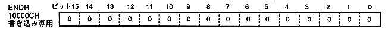
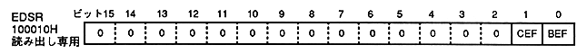
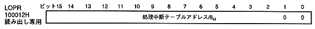
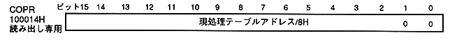

CEF | End bit fetch status |
0 | End bit unfetched in current frame |
1 | End bit fetching and rendering in the current frame: End of drawing: |
BEF | End bit fetch status |
0 | End bit unfetched in previous frame |
1 | End bit fetching and drawing end in the previous frame |

